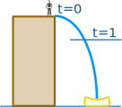
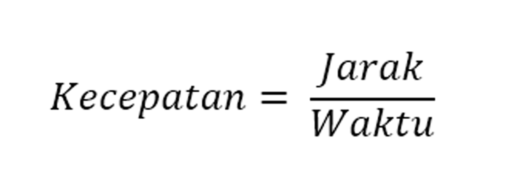
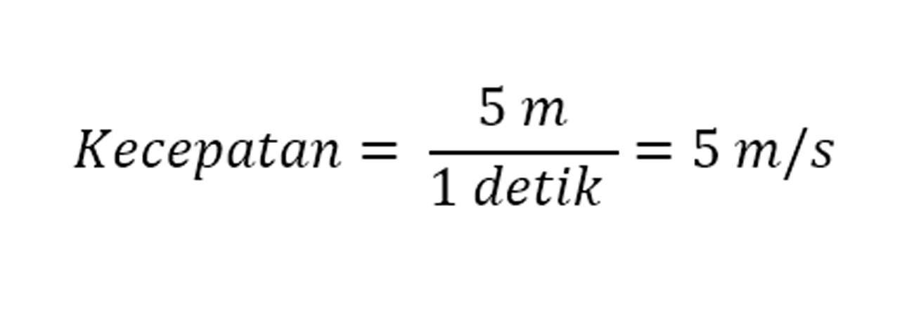
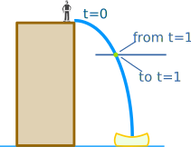

APA ITU KALKULUS?
Intinya, kalkulus itu hubungannya dengan perubahan
Ada sebuah cerita, dikisahkan 2 orang yaitu Sam dan Alex sedang berjalan naik mobil ... akan tetapi speedometer nya rusak.
Alex :
"Hei Sam! Berapa kecepatan kita sekarang?"
Sam :
"Tunggu bentar ..."
"Dalam 1 menit terakhir kita berjalan sejauh 1.2 km, jadi kecepatan kita:"
1.2 km per menit x 60 menit dalam satu jam = 72 km/jam
Alex :
"Enggak, Sam! Bukan kecepatan rata2 dalam semenit terakhir, atau bahkan sedetik terakhir, aku mau tau kecepatan kita TEPAT SEKARANG INI."
Sam :
"OK, kita hitung disini ... pas di plang depan... MULAI!"
"OK, ketika di samping tiang kita berada di detik ke nol, dan jaraknya adalah ... nol meter!"
Jadi kecepatannya adalah 0m / 0s = 0/0 = Gatau :(
"Aku tidak bisa menghitungnya, Alex! Aku harus butuh selisih jarak dan selisih waktu, dan tai kamu bilang waktunya nol? Tidak bisa...."
Bagaimana kalau nilainya dibuat benar-benar mendekati?
Tapi cerita belum selesai!
Sam dan Alex keluar dari mobil, karena mereka sampai di lokasi. Sam akan melakukan atraksi:

Sam melompat dari gedung ketinggian 20 meter.
Alex, sebagai fotografer, bertanya:
"Berapa kecepatanmu setelah 1 detik?"
Sam menggunakan rumus sederhana untuk menemukan jarak:
d = 5t2
- d = Distance / Jarak (dalam meter)
- t = Time / Waktu (dalam detik)
(Catatan: ini adalah rumus yang disederhanakan dari rumus gravitasi: d = ½gt2)
Contoh: Pada setik ke 1, jarak Sam jatuh adalah:
d = 5t22 = 5 m
Tapi seperapa cepat? Kecepatan adalah Jarak dibagi Waktu:

Jadi dalam 1 detik:

"Tapi", kata Alex, "ini adalah kecepatan rata-rata, sejak kamu pertama lompat, ... Aku pengen tau kecepatan tepat 1 detik setelah kamu lompat, agar aku bisa setting kamera dengan pas."

Ya ... tepat 1 detik kecepatanmu adalah:
Lagi lagi Sam mendapat masalah.
Coba pikirkan ... Bagaimana caranya mencari tau kecepatan tepat diwaktu tertentu secara instan?
Bagaimana jaraknya? Bagaimana perubahan waktunya?
Mereka semua nol, tidak memberikan hasil kalo dihitung!
Tapi Sam punya ide.
Sam tidak akan memberinya nilai, dan hanya memanggilnya "Δt" (dibaca "delta t").
Jadi Sam menemukan selisih jarak antara t dan t+Δt
Setelah 1 detik Sam jatuh
5t2 = 5 × (1)2 = 5 m
Pada (1+Δt) Sam jatuh
5t2 = 5 × (1+Δt)2 = 5 m
Kita bisa jabarkan (1+Δt)2:
(1+Δt)2 = (1+Δt)(1+Δt)
= 1 + 2Δt + (Δt)2
Jadi saat (1+Δt) detik Sam jatuh
d = 5 × (1+2Δt+(Δt)2) m
d = 5 + 10Δt + 5(Δt)2 m
Jadi:
Dalam 1 detik: d = 5 m
Dalam (1+Δt) detik: d = 5 + 10Δt + 5(Δt)2 m
Jadi antara 1 detik dan (1+Δt) detik kita mendapat:
Perubahan d = 5 + 10Δt + 5(Δt)2 − 5 m
Perubahan Jarak per Waktu:
Jadi kecepatannya adalah 10 + 5Δt m/s, dan Sam berfikir berapa nilai dari Δt ... Dia ingin Δt itu menjadi mengecil sekecilnya ... dia membayangkan Δt mengecil hingga mendekati nol dan dia mendapat:
Kecepatan = 10 m/s
Wow! Sam Mendapatkan jawaban!
Sam: "Aku akan jatuh dengan kecepatan tepat 10 m/s"
Alex: "Aku kira kamu tidak bisa menghitungnya?"
Sam: "Itu tadi aku belum memakai kalkulus!"
YEP! Tadi barusan adalah kalkulus